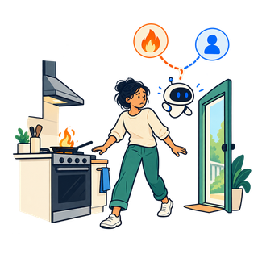
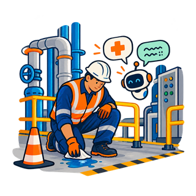
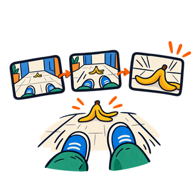
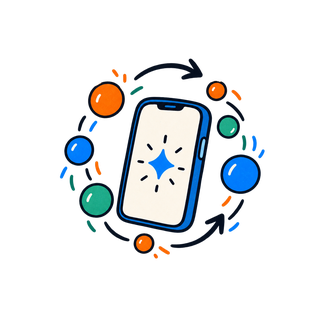

Toward Personal Agents That Stay Safe
PReMind-Bench and PReMind-4B are a first step. A personal agent that people can rely on must remember who they are and still put their safety first, in more places, over longer time, and against more ways of failing. These are the directions we hope to pursue next.

-
01
Now · open problems
Close the remaining joint failures
Most interdependency cases are still failed, mostly because the fact is retrieved but not applied, and PReMind flags more safe scenes as unsafe than its base. Closing this gap is the first goal.

-
02
Beyond the home and beyond English
More places, languages and practices
Extend from household scenes to settings such as industrial sites, and from English requests and guidance to other languages and regional first-aid practice.

-
03
From images to streams
Egocentric video
Move from single images to continuous first-person video, where hazards unfold over time and the agent must decide when to speak up, not only what to say.

-
04
Living memory
On-device agents with continual adaptation
Personal memory grows and changes. Agents should keep up with it continually and run on the user's own device, so that personal facts stay with the person they belong to.

-
05
Trust
Memory that cannot be turned against the user
Memory is also an attack surface: deliberately harmful entries could steer an agent toward unsafe behavior. Red-teaming such attacks, and safeguarding edited images of people against misuse, are part of making personal agents safe.
Our goal is a personal agent that knows the people it serves and keeps them safe when that knowledge matters most.